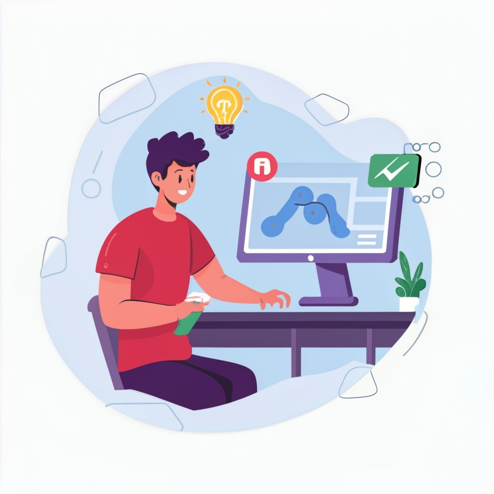
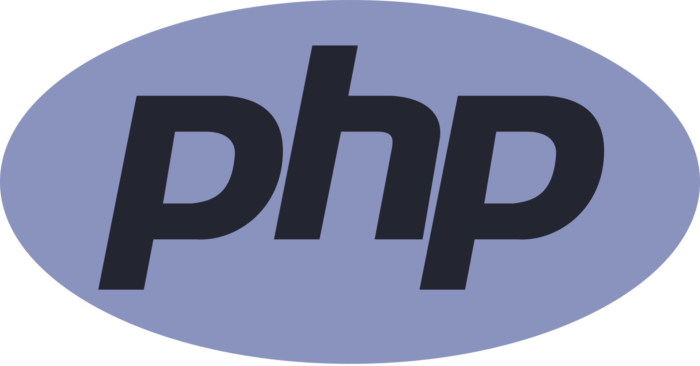
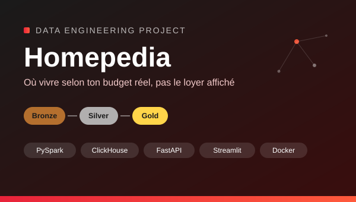
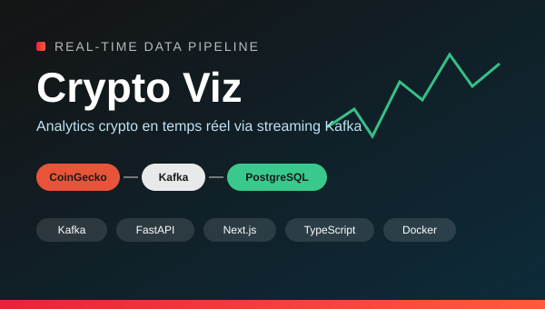

Mes compétences
Développement full-stack


Ingénieur diplômé d’un MSc Pro en ingénierie logicielle, spécialité Big Data (Epitech). Je conçois des applications de bout en bout, API, interfaces et bases de données, ainsi que les pipelines de données qui les alimentent (Python, Spark, Airflow, Kafka). Disponible immédiatement en CDI.
Salut ! Je m’appelle Irfann ASSANA, basé en Île-de-France. Je suis diplômé d’un MSc Pro (Bac+5) en ingénierie logicielle, spécialité Big Data, à Epitech Technology, et je viens de terminer deux ans d’alternance chez DATA à Cachan.
J’ai un profil hybride : côté full-stack, j’ai travaillé en production sur du C#/.NET, Vue.js, Node.js et PHP, de la base de données à l’interface. Côté data, j’ai conçu des pipelines Python/Airflow en entreprise, puis des pipelines Spark en architecture médaillon (Bronze/Silver/Gold), du streaming Kafka et des APIs FastAPI sur mes projets de formation. Je recherche un CDI en développement full-stack avec une composante data, ou en data engineering.

Ingénieur informatique en alternance chez DATA (Cachan), de septembre 2024 à septembre 2026 : trois projets clients, du développement full-stack aux pipelines de données.
Conception et développement complet d'une plateforme pour un client (rôles, authentification, contenus), avec un environnement conteneurisé démarrable en une seule commande et une sauvegarde à deux niveaux chiffrée. En complément, un pipeline de reporting qui calcule des indicateurs depuis les données de la plateforme, et un pipeline de logs applicatifs (chargement incrémental dans une table d'audit).
Corrections et nouvelles fonctionnalités sur une application en micro-services, sur toute la chaîne : base de données, API C# et interface Vue.js. Conception d'un pipeline d'analytics (SQL Server vers PostgreSQL) calculant des indicateurs de criticité par enseigne sur environ 54 000 commandes, puis d'un pipeline géographique croisant commandes et régions.
Développement d'une API qui donne accès à des rapports QlikSense sans licence individuelle par utilisateur, du prototype en ligne de commande jusqu'à la mise en production, puis correction d'un bug remonté par le client en production.

Plateforme d'aide au logement étudiant : pipeline PySpark en architecture médaillon (Bronze/Silver/Gold) sur un cluster distribué (1 master et 2 workers), croisant 5 sources externes pour scorer les communes selon le budget, le transport et la vie culturelle. Publication sur ClickHouse, restitution via FastAPI et Streamlit.

Plateforme d'analytics crypto en temps réel : pipeline de streaming Kafka (producer/consumer) ingérant 5 cryptomonnaies toutes les 60 secondes, API FastAPI, base PostgreSQL et dashboard Next.js/TypeScript avec indicateurs financiers (volatilité, Sharpe, drawdown, corrélation) et simulateur de portefeuille.
Écrivez-moi à irfannassana@gmail.com ou utilisez le formulaire ci-dessous.